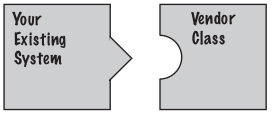
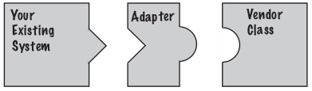
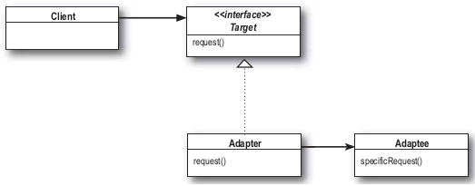
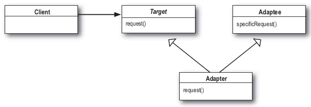
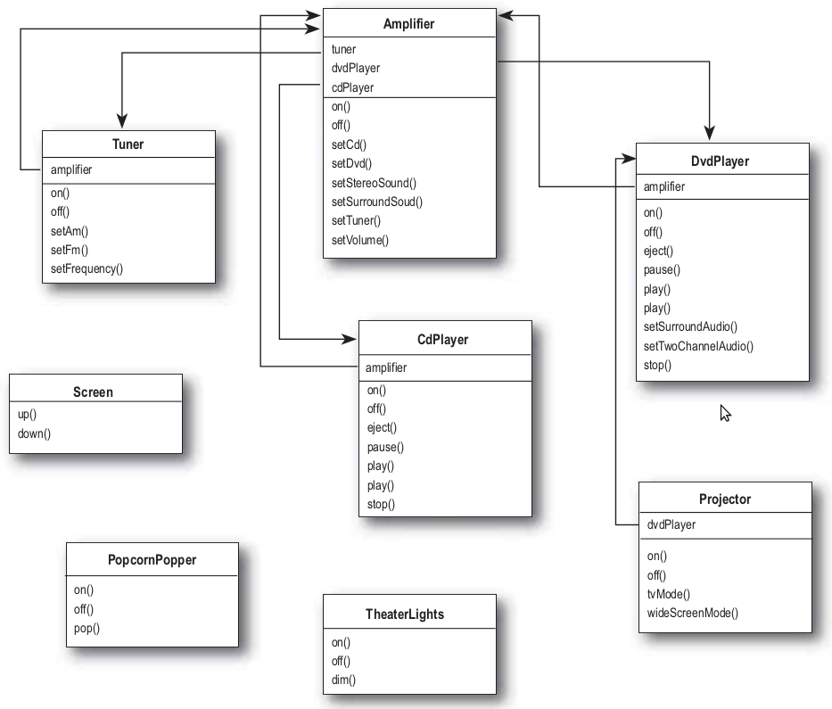
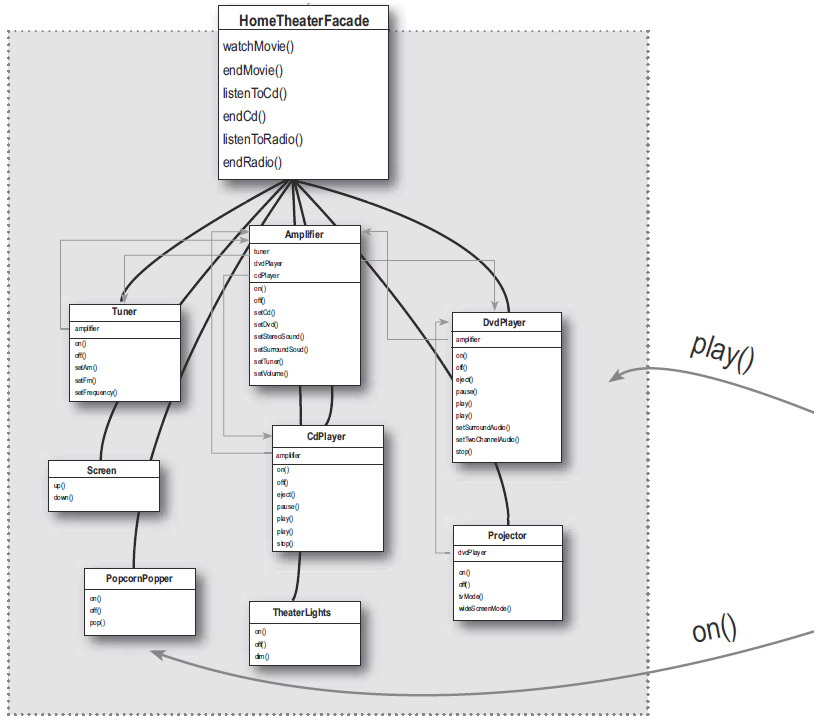

Adapter
Adaptadores de Objetos
Supongamos que tenemos un software que necesitamos hacer andar una nueva libreria que tiene un diseño distinto en la interfaces que el software base.

No queremos tocar el codigo del software de base y no podemos cambiar el codigo de las librerias. Lo que podemos hacer es escribir una clase que adapte la interfaz de la libreria a la del software que tenemos.

Adapter
Acemos una version distinta de la implementacion de los patos para ver el adapter y agregamos pavos que implementan una interfaz distinta.
La interfaz de los patos
Vemos como queda un pato cuando implemneta la interfaz Duck
Adapter
Ahora la interfaz de los pavos
Vemos como queda un pavo cuando implemneta la interfaz Duck
Adapter
Si queresmos usar pavos en donde esperamos patos, como guardar en un variable Duck un Turkey, o pasar un Turkey por parámetro como si fuera un Duck, necesitamos el adaptador que haga que el Turkey parezca un Duck.
- Implementamos la interfaz del tipo que esperamos.
Por ejemplo esperamos un parametro tipo Duck, pero queremos que contenga un objeto tipo Turkey.
O en el caso de un método espera un tipo de parametro Duck y queremos pasarle uno tipo Turkey
Adapter
- En el contructor le pasamos el tipo incompatible al que queremos adaptarlo, lo disfrasamos para que parezca de otra interface. En este caso Turkey
- Como implementamos Duck tenemos que implemnetar quack() y fly() y aca es donde hacemos la traduccion. Cuando llamemos a quack() en realidad el pavo a a ejecutar gobble()
Adapter
Testeamos el adapter
Adapter
Paso a paso lo que hicimos
- El cliente hace la llamada al adaptador llamando a algun método de la interfaz destino.
En este caso la interfaz destino es Duck.
- El adaptador traduce las llamadas en uno o muchas llamadas al objeto envuelto o contenido por el adapter. En este caso Turkey
- El cliente recibie los resultados sin saber que hubo un adapter en el medio haciendo la traduccion.
Adapter
Principios de OO en el adapter
- Usamos la composición para envolver adaptee con una interfaz alterada. Esto tiene la ventaja que podemos usar un adapter con cualquier sublcase del adapter.
- También vemos como el patron enlaza al cliente a una interface no a una implementación, esto significa que podemos usar varios adapters, cada uno adaptando un grupo diferente de clases, o le podemos agregar nuevas implementaciones mientras se implemente la interfaz target.
Patron Adapter
Convierte la interfaz de una clase en otra interfaz que el cliente espera. Adapter deja comunicarse a clases que de otra forma no podrían hacerlo por incompatibilidades de interface.
- Motivación: Cuando tenemos una clase, parametro o varible de instancia que espera una interfaz, y tenemos una que ofrese la misma funcionalidad pero con una interface diferente, y queremos que se puedan comunicar si tener que hacer cambios en el codigo de las clases intervinientes
- Aplicabilidad:
- Queremos utilizar una clase ya existente, pero cuya interfaz no coincide con la que necesitas
- Queremos crear una clase reutilizable que coopere con otras no relacionadas, es decir, con clases que puedan no tener una interfaz compatible
- Necesites usar varias subclases existentes pero no sea práctico adaptar sus interfaces. Un object adapter puede adaptar la interfaz de la clase padre.
Patron Adapter
- Participantes:
- Target: define la interfaz específica de dominio que el cliente usa
- Client: colabora con los objetos que implementan la interfaz definida por el target
- Adaptee: define una interfaz existente que necesita adaptarse
- Adapter: adapta la interfaz del objeto adaptado a la definida por el target
- Consecuencias:
- Object adapter:
- Un adapter funciona con varios adaptees (el mismo adaptee y todas sus subclases)
- Dificulta sobrescribir el comportamiento del adaptee
- Class adapter:
- El adapter hereda el comportamiento del adaptee, y puede sobrescribirlo
- No sirve para adaptar una clase y todas sus subclases
- Introduce un único objeto, no hace falta un nivel de indirección para obtener el adaptee
Patron Adapter
-
Obeject Adapter

-
Class Adapter

Adapter
Object Adapter y Class Adapter
Hay dos implementaciones del patrón Adapter, Object Adapter y Class Adapter
-
Object Adapter
Pros:
- Más flexible que class Adapter
- No requiere usar herencia
- Adapter funciona con Adaptee y todas sus subclases
Contras:
- Más difícil sobreescribir el comportamiento de Adaptee
- Requiere más código en la implementación
-
Class Adapter
Pros:
- menos codigo que object adapter
- puede sobreescribir el comportamiento de Adaptee si se requiere
Contras:
- Requiere hacer uso de herencia (herencia simple)
- Menos felxible que object Adapter
Facade
Nos armamos un cine en casa completo
Vemos el diagrama de clases de todos los dispositivos con las conexiones

Facade
El problema es hacer que ande. El procedimieto sería el siguiente:
- prender la maquina de pochoclo en on
- poner iniciar para que arranque
- bajar las luces
- bajar la pantalla
- prender el proyector
- setear la entrada del proyector en dvd
- poner el proyectro en modo winde screen
- setear el amplificador en DVD input
- poner el amplificador en modo surround
- poner el volumen del amplificador en 5
- prender el dvd player
- poner play en el dvd
En código sería
Facade
Con facade podemos tratar un subsistema complejo y hacerlo fácil de usar implementando la clase facade que provee una interface más razonable

Facade
Procedimiento
- Para hacer el facade creamos una clase nueva HomeTheaterFacade, lo que expone unos pocos y simples métodos como wathMovie().
- La clase Facade toma al home theater como un subsistema, y hace llamadas en el subsistema para implementar watchMovie().
- El código de cliente llama a los métodos del home theater Facade, no hace llamadas a los subsistemas. Ahora cuando queremos ver una película llamamos a un sólo método watchMovie() y este se comunica con las luces, DVD player, proyector, amplificador, pantalla, y pochoclera.
Esto hace que quede desacoplada la implementacion del cliente de cualquier sistema.
Supongamos que queremos actualizar el hometheater cambiando todos los componentes. Si codeamos el cliente para que use el facade, en ves de el subsistema, no hay que cambiar nada en el cliente, pero si hay que cambiar el facade.
- Facade deja al subsistema accesible para ser usado directamente. Si necesitamos una funcionalidad especial igual tenemos acceso al subsistema. En realidad no encapsula al subsistema de bajo nivel, simplemente provee una interface simplificada.
Facade
Facade y adapter
La diferencia entre adapter y facade es que adapter envuelve ona clase y facade representa muchas clases?
No, adapter cambia la interface de una o más clases, en uno interface que el cliente esta esperando. Mientras la mayoríaa de los ejemplos de adapter son adaptando una sola clase puede que haya que implementar varias interfaces para proveer la interface que el cliente esta esperando.
En cambio facade puede proveer una interfaz simplificada a una sola que tenga una interfaz compleja.
La principal diferencia no es cuantas clases envuelve uno o el otro sino su intencion, la intencion del adapter es alterar una interface para hacer coincidir con la que el cliente espera y la intension de facade es proveer una interface simplificada a un subsistema.
Facade
Implementando el facade
Usamos composición para acceder para que el facade pueda acceder a todos los componetes del subsistema
Facade
Implementando el facade
Facade
Facade y Command
Ambos ocultan la complejidad de los subsistemas y proveen una forma facil usar la interface del clientes
Facade se usa para ocultar la estructura interna y provee una interfaz simplificada, al mismo tiempos uqe daja las interfaces de bajo nivel disponibles en el caso que se necesite alguna funcionalidad extra
Command se usa para encapsular acciones que permiten usar la funcionalidad, ademas de undo, tareas y colas
Patrón Facade
Provee una interfaz unificada a un conjunto de interfaces en un subsistema. Define una interfaz de alto nivel que facilita el uso del subsistema.
- Clasificación: Es un patrón estructural.
- Motivación: Reducir su complejidad con la división en subsistemas, minimizando las comunicaciones y dependencias entre éstos.
- Aplicabilidad:
- Se quiera proporcionar una interfaz sencilla para un subsistema complejo
- Se quiera desacoplar un subsistema de sus clientes y de otros subsistemas, haciéndolo mas independiente y portable
- Se quiera dividir los sistemas en niveles: las fachadas serían el punto de entrada a cada nivel
Patrón Facade
- Participantes:
- Fachada: : delegar las peticiones de los clientes en los objetos del subsistema
- Clases del subsistema: implementar la funcionalidad del subsistema.
- Consecuencias:
- Oculta a los clientes de la complejidad del subsistema y lo hace más fácil de usar
- Favorece un acoplamiento débil entre el subsistema y sus clientes, consiguiendo que los cambios de las clases del sistema sean transparentes a los clientes
- Facilita la división en capas y reduce dependencias de compilación
- No se impide el acceso a las clases del sistema
Principio de diseño
Menor conocimiento
Hablar solo con amigos inmediatos.
Esto significa que cuando estamos diseñando un sistema, seamos cuidadosos en la cantidad de clases que interactuan, y tambien como interactuan.
Este principio nos previene de crear diseños que tienen gran número de clases acopladas lo que ocasiona que los cambios impacten en cascada en otras partes, esto hace que un sistema sea frágil, difícil de mantener, y complejo de entender.
Guias de como seguir el principio
Tomamos un objeto, desde cualquier método del objeto, el principio nos dice que debemos invocar métodos que sólo pertenezcan a:
- El objeto mismo
- Objetos pasados como parámetro en el método
- Cualquier objeto que el método crea o instancia
- Cualquier componente del objeto
Principio de diseño
Menor conocimiento
Cual es el daño de llamar el método de un objeto, que obtenemos de otro?
Bueno si hacemo eso, le estamos haciendo un requerimiento a otro objeto e incrementando el numero de objetos que conocemos directamente. En este caso el principio nos fuerza a que el objeto que invocamos haga la invocacion al siguiente objeto por nosotros. De esa manera no tenemos que saber detalles del objeto componente y mantenemos el circulo de amigos pequeño.
Sin el principio
Con el principio
Principio de diseño
Menor conocimiento
Mantener las llamadas dentro de los límites
Esta clase auto demuestra todas las formas que se pueden llamar métodos sin violar el principio Menor Conocimiento
La desventaja qeu tiene es que si bien el principio reduce las dependencias entre objetos y estudios demuestran que con esto se reduce el mantenimiento, tambien es cierto que produce mas clases que son envueltas para manejar las llamadas a otros componentes, lo que puede ocacionar mas complejidad, tiempo de desarrollo y performance.
Referencias
Head First Design Patterns
←
→
/
#